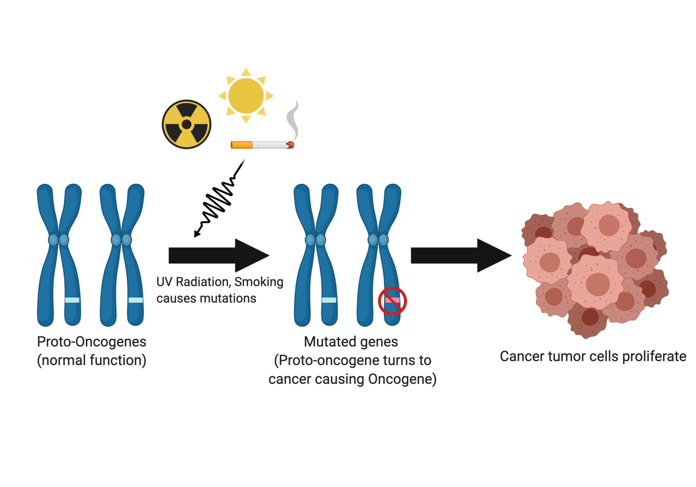
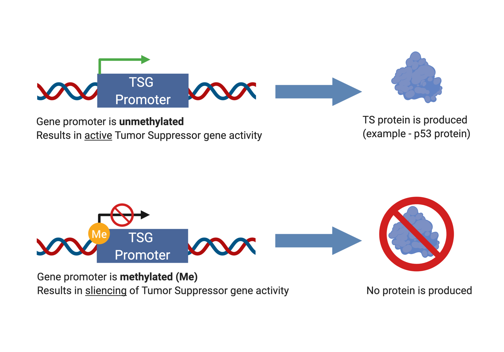

Cancer — it’s one of the most prevalent health conditions in the United States, affecting an estimated 15.3 million people according to the National Cancer Institute SEER program. The NCI SEER program is dedicated to tracking health populations and statistics related to cancer. In an effort to combat this disease, Congress passed the 21st Century Cures Act in December 2016, which allocated $1.8 billion over a period of 7 years to help fund cancer research efforts. This initiative has been dubbed the Cancer Moonshot, with goals to detect and treat cancer through technological advances.
But, what is cancer? How does cancer arise in the first place?
As it turns out, cancer is inherently a genetic disease.
In this post, we’ll discuss cancer on the genetic level. You’ll learn about how certain genes can either cause or prevent cancer growth, and how our epigenetics can influence cancer development. Epigenetics is the idea of how the environment we live in shapes our gene activity.
To begin understanding how cancer works, we need to first dive into the genetic mechanisms of cancer. Generally, physicians and scientists know that one single mutation alone is not enough to cause cancer as the cell can usually carry out its function with one mutation. For a cell to become cancerous, or divide uncontrollably, many mutations in the gene need to accumulate over time.
There are two main categories of genes with opposing functions: mutated proto-oncogenes (called oncogenes) cause healthy cells to become cancerous, whereas tumor suppressor genes keep cancer at bay by regulating cell division.
Imagine this scenario: you’re driving a car down the road. This car represents your individual cells. As you’re driving down the road, you accelerate and decelerate with the gas and brake pedals. The gas pedal is analogous to your normal functioning proto-oncogene. Now, let’s say your gas pedal suddenly malfunctions becomes stuck, causing your car to accelerate to dangerous speeds. This is akin to getting a mutation on your proto-oncogene, and multiple mutations turn it into an oncogene. What do you suppose happens next? With the malfunction in the gas pedal, you’re now more likely to veer off the road and into a tree, crashing and damaging the car. This is a simple analogy of how your cells can go from healthy to cancerous.
Under normal circumstances, proto-oncogenes are genes involved with healthy cellular functions like dividing, growing, and dying. However, if a proto-oncogene is mutated, the gene then becomes an oncogene. Oncogenes are involved in uncontrolled cell growth. Cancer typically arises in cells with many mutated oncogenes, which is like having your gas pedal stuck as your car accelerates to dangerous speeds.

Mutations in proto-oncogenes can be classified as gain-of-function mutations as the gene “gains” the additional “function” of causing an increased risk of cancer. Oncogenes are the result of dominant mutations. The ras family of genes has been implicated to cause a wide variety of cancers, such as pancreatic, lung, colon, thyroid, and leukemic cancers. Mutations in the ras gene have been observed in more than 30% of all cancers, and this gene family is involved with cellular processes like dividing and growing [1].
#### Abridged List of Oncogenes in Human Cancers [2] | Gene |Type of cancer | |--|--| | akt | Ovarian and pancreatic carcinomas| | erbB-2 | Breast and ovarian carcinomas| | gli | Glioblastoma| | gsp | Pituitary and thyroid tumors| | lyl | Acute T-cell leukemia | c-myc | Breast and lung carcinomas, Burkitt’s lymphoma | L-myc | Lung carcinoma | N-myc | Neuroblastoma, lung carcinoma | rasH | Thyroid carcinoma | rasK| Colon, lung, pancreatic, and thyroid carcinomas | rasN | Acute myelogenous and lymphocytic leukemias, thyroid carcinoma | SMO| Basal cell carcinoma
### Tumor Suppressor Genes as our “Brake Pedals”
Let’s imagine the same car scenario from earlier. Only this time, the brake pedals in your car represent tumor suppressor genes. The brake pedals connect to your front wheels and back wheels, giving your car two sets of brake pedals. This is important and a distinction to oncogenes. When one set of your brake pedals malfunctions, you’re still able to drive, albeit with an increased likelihood of crashing off the road. However, if both sets of brake pedals malfunction, then the probability of crashing has significantly increased. This is akin to how tumor suppressor genes work: healthy patients generally have two copies (one from Mom, one from Dad) of the tumor suppressor genes. In patients with cancer, they typically have both their tumor suppressor genes mutated, giving cancer the ability to grow uncontrollably.
These “brake pedal” genes are the second category of cancer genetics, and you can imagine that these genes have the opposing function to oncogenes, or the “gas pedal.” Tumor suppressor genes have protective effects against cancer, and these genes have the ability to control cell death, monitor how quickly cells divide into new cells, and repair mutated DNA. However, if a tumor suppressor gene becomes mutated, the gene loses its protective function, thus increasing the risk of a cell to become cancerous. Similarly, if your car loses both sets of brake pedals, your car is highly likely to crash off the road.
The idea that both copies of the tumor suppressor gene need to be mutated is known as the “Two-Hit Hypothesis". Developed in 1971 by scientist Alfred G. Knudson, this hypothesis explained the model of how tumor suppressor genes work [3]. If a patient had one mutated tumor suppressor gene, this patient was not likely to develop cancer, since there is still one functioning tumor suppressor gene, or going back to the analogy, one set of functioning brake pedals in the car.
Mutations to tumor suppressor genes can be classified as loss-of-function mutations, as the gene “loses” the protective “function” of preventing a cell from becoming cancerous. Tumor suppressor genes are the result of recessive mutations. The famous TP53 gene, known as the “guardian of the genome,” has been observed to be mutated in over 50% of all human cancers [4]. Another crucial tumor suppressor gene, the PTEN gene, if mutated, can lead to an inherited disorder called Cowden syndrome. Patients with Cowden syndrome have an increased risk of developing breast and thyroid cancers, among others.
#### Abridged List of Tumor Suppressor Genes in Human Cancers [5] | Gene |Type of cancer | |--|--| | APC| Colon/rectum carcinoma| | BRCA1 | Breast and ovarian carcinomas| | BRCA2 | Breast carcinoma| | DPC4 | Pancreatic carcinoma| | INK4 | Melanoma, lung carcinoma, brain tumors, leukemias, lymphomas | TP53 | Brain tumors; breast, colon/rectum, esophageal, liver, and lung carcinomas; sarcomas; leukemias and lymphomas | PTC | Basal cell carcinoma | PTEN | Brain tumors; melanoma; prostate, endometrial, kidney, and lung carcinomas | RB | Retinoblastoma; sarcomas; bladder, breast, and lung carcinomas | VHL| Renal cell carcinoma
Everyone has these two categories of genes. Under normal circumstances, when proto-oncogenes and tumor suppressor genes are functioning normally, cells are healthy and non-cancerous. However, if enough mutations occur to multiple proto-oncogenes or tumor suppressor genes, then cells become cancerous and begin to grow uncontrollably.
Now, at this point, you may be wondering, can our genes be affected by changes other than mutations? Yes, genes can be influenced by our epigenome, in the field known as epigenetics. For the purposes of this article, epigenetics refers to changes that do not involve altering the DNA sequence itself. Instead, these changes alter the levels of gene expression and activity. For a more in-depth understanding of epigenetics, check out a previous Stanford’s The Dish on Science blog post here.
Scientists know that lifestyle choices including diet, exercise, stress, and even sleep can influence our epigenetics. The epigenetic modification this post will focus on is DNA methylation, which is most heavily researched epigenetic modification.
Methylation is akin to chemical handcuffs, inhibiting activity when the methyl group binds to a biological target. For example, let’s say Gene is a friendly citizen in your local neighborhood that does fantastic charity work with organizations. Here, Gene represents a DNA promoter, and the neighborhood represents individual cells. Gene loves his charity work, and the neighborhood loves him back.
However, one day, the police show up at Gene’s house and arrest him because the police discovered that Gene was once a burglar many years ago. You can imagine that the police will handcuff Gene, thus preventing Gene from doing his charity work in the neighborhood. Without Gene, the neighborhood slowly decays without his charity work. The handcuffs are analogous to the methylation process, which silences gene expression. DNA methylation at the gene promoter prevents activity, thus proteins will not be expressed.
The chemical process of DNA methylation has been studied extensively, and researchers have determined that DNA methylation is associated with cancer. Methylation occurs on DNA bases A and C, and C methylation is most commonly observed in plants, animals, and fungi. These C methylation sites are generally immediately followed by a G base, identified as CpG methylation. Multiple CpG methylation sites on gene promoters lead to gene silencing [6]. Numerous factors have been identified to cause increased activity of DNA methylation, and by extension, gene silencing. Factors include long term depression, stress and trauma in early childhood development, and posttraumatic stress disorder (PTSD) [7].

Generally speaking, tumor suppressor genes are hypermethylated, thus very silenced, whereas oncogenes are hypomethylated, thus “audible” or expressed. If tumor suppressor genes are silenced, then they cannot properly function to prevent cells from becoming cancerous. This would be like the police handcuffing Gene to prevent him from doing his charity work in the neighborhood. Specifically, researchers found that cancer cells had hypermethylation at gene promoters of tumor suppressor genes in colorectal, breast, and retinoblastoma cancers [8]. In a different study, researchers found that global trimethylation of Lys20 at histone H4 is commonly observed in all human cancerous cells [9].
Cancer epigenetics like DNA methylation can be found in all types of human cancers, and health professionals have used this fact to develop novel cancer treatments that target the methylation process. Developing drug therapeutics that can inhibit DNA methylation of tumor suppressor genes can prove useful in the fight against defeating cancer. Think of this as releasing Gene from his “chemical handcuffs” so Gene can go back to doing amazing charity work for the neighborhood. More broadly, epigenetics is an emerging field that excites researchers because it not only affects cancer genetics but also influences the genetics of many other health conditions as well.
### Conclusions As we’ve discussed previously, cancer is inherently a genetic disease. Oncogenes and tumor suppressor genes are in a never-ending battle opposing each other within our bodies. The lifestyle choices you make can either help or hurt your cells in fighting off cancer. You can maintain the brakes in good shape or you can stomp on the gas — your cells, your call.
Azmi AS. Introduction. Conquering RAS: From Biology to Cancer Therapy xvii–xviii. (2017).
Cooper GM. The Cell: A Molecular Approach. 2nd edition. Sunderland (MA): Sinauer Associates; Oncogenes. (2000).
Chial H. Tumor suppressor (TS) genes and the two-hit hypothesis. Nature Education 1(1), 177 (2008).
Cole A., Zhu Y., Dwight T. et al. Comprehensive analyses of somatic TP53 mutation in tumors with variable mutant allele frequency. Nature Scientific Data 4, 170120 (2017).
Cooper GM. The Cell: A Molecular Approach. 2nd edition. Sunderland (MA): Sinauer Associates; Tumor Suppressor Genes. (2000).
Jones PA., Baylin SB. The Epigenomics of Cancer. Cell 128(4), 683–692 (2007).
Zannas AS. et al. Epigenetics of Posttraumatic Stress Disorder: Current Evidence, Challenges, and Future Directions. Biological Psychiatry 78(5), 327–335 (2015).
Gonzalo S. Epigenetic alterations in aging. Journal of applied physiology 109(2), 586–597 (2010).
Fraga M., Ballestar E., Villar-Garea A. et al. Loss of acetylation at Lys16 and trimethylation at Lys20 of histone H4 is a common hallmark of human cancer. Nature Genetics 37, 391–400 (2005).